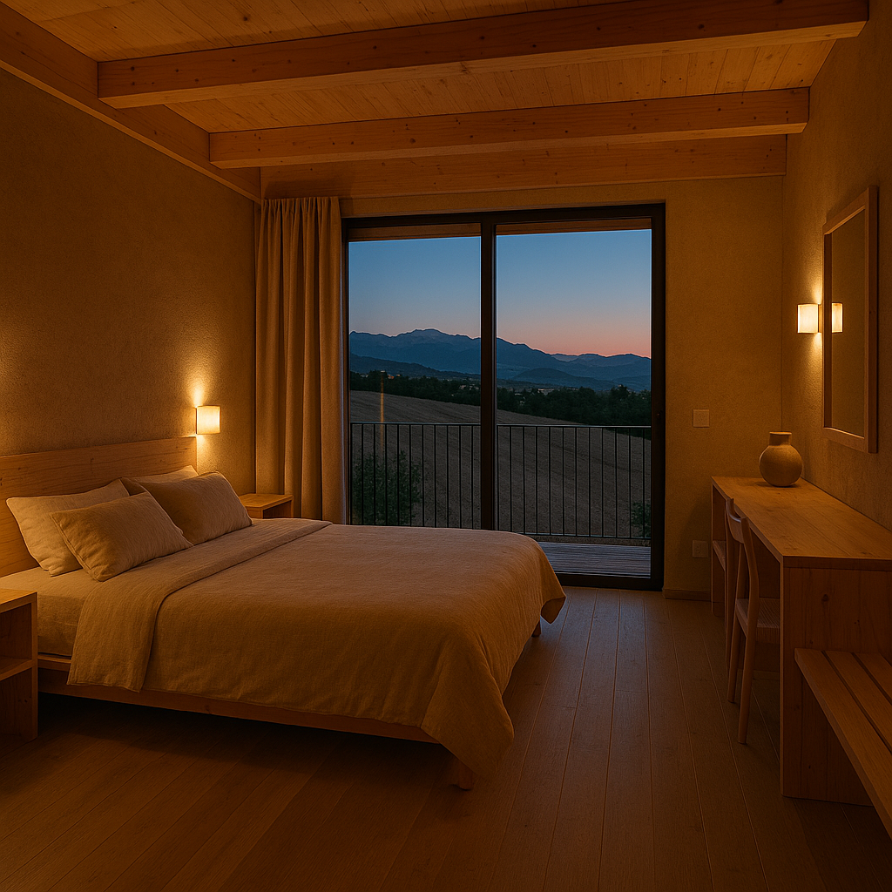
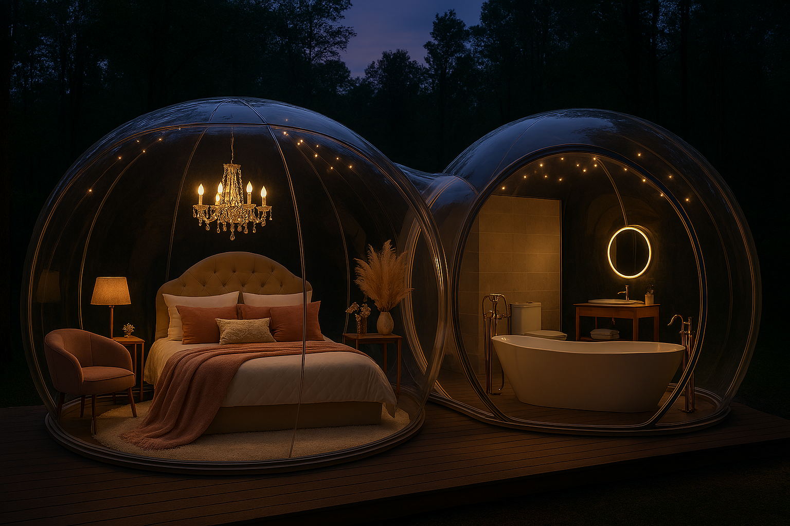

Camere
Le nostre camere combinano eleganza contemporanea e comfort assoluto. Ogni ambiente è progettato per offrire un’esperienza di relax totale.

: camera matrimoniale con vista, bagno privato e servizi di alta gamma.
Bolle
Le bolle trasparenti permettono di dormire immersi nella natura, sotto un cielo stellato.

: esperienza romantica sotto le stelle con comfort termico e privacy.
Sala Eventi
Una sala elegante e modulabile, perfetta per matrimoni, meeting aziendali e celebrazioni private.

: capienza modulabile, catering interno e supporto tecnico.
Prodotti Locali
Selezione di prodotti tipici: olio, vino, miele e specialità artigianali.

: pacchetti degustazione e shop in loco.
La Giornata del Contadino
Evento autentico con raccolta, laboratori e degustazioni per vivere la campagna abruzzese.

: attività per famiglie e gruppi, durata mezza giornata o giornata intera.
Contatti
Per informazioni e prenotazioni: Email: info@luxuryretreat.it - Telefono: +39 333 123 4567

Descrizione prova: orari di apertura e recapiti social.
Dove Siamo
Sant’Eusanio del Sangro è un tranquillo borgo dell’Abruzzo interno, situato in provincia di Chieti e immerso in un paesaggio dolce e verdeggiante. Il paese sorge a pochi minuti dalla Valle del Sangro, un’area ricca di natura, storia e tradizioni, incorniciata a sud dallo scorrere del fiume Sangro, che lo separa dai comuni di Altino e Atessa. Il centro abitato, di origini antiche e conosciuto in passato come Monteclo, conserva ancora oggi un’atmosfera autentica e rilassata. Passeggiando tra le sue vie si incontrano testimonianze storiche, piccoli palazzi e scorci panoramici che raccontano secoli di vita locale, dalle prime citazioni medievali fino al ruolo del territorio durante la Seconda Guerra Mondiale. La posizione strategica del borgo permette di raggiungere facilmente sia la costa adriatica sia le montagne della Majella, rendendolo un punto di partenza ideale per chi desidera esplorare l’Abruzzo più genuino. Qui il ritmo è lento, l’accoglienza è calorosa e la natura è sempre a portata di mano.

Descrizione prova: indicazioni stradali e parcheggio disponibile.
Cose da Fare entro 30 minuti
Escursioni, borghi medievali, degustazioni, Costa dei Trabocchi e percorsi in bici.

### **Da vedere in paese** - **Casa Museo Cesare De Titta** – dedicata al celebre poeta abruzzese. - **Centro storico** – vicoli, chiese e scorci panoramici sulla valle del Sangro. - **Prodotti tipici**: olio, salumi, formaggi, vino Montepulciano d’Abruzzo. --- # 🌳 **2. Natura & Escursioni (entro 30 min)** ## **Oasi WWF Lago di Serranella – 10 min** Perfetta per famiglie, birdwatching e passeggiate rilassanti. - Sentieri naturalistici - Osservatori faunistici - Possibilità di visite guidate ## **Sorgenti del Fiume Verde – Fara San Martino – 20 min** Uno dei luoghi più suggestivi della Majella. - Passeggiata facile tra gole e acque cristalline - Ideale per foto e relax - Accesso libero ## **Gole di Fara San Martino – 25 min** Porta d’ingresso al Parco Nazionale della Majella. - Trekking di vari livelli - Paesaggi mozzafiato - Possibilità di visite guidate con guide AIGAE ## **Valle dell’Orfento – Caramanico Terme – 30 min** Una delle riserve naturali più belle d’Italia. - Sentieri immersi nei boschi - Ponti sospesi e cascate - Ideale per escursionisti e amanti della natura --- # 🏖️ **3. Mare & Relax (entro 30–35 min)** ## **Costa dei Trabocchi – San Vito Chietino – 25 min** La costa più iconica d’Abruzzo. - Passeggiate sulla Via Verde - Spiagge di ciottoli e acqua limpida - Possibilità di cenare sui trabocchi (esperienza unica) ## **Riserva Naturale di Punta Aderci – Vasto – 30–35 min** Un paradiso selvaggio. - Spiagge incontaminate - Tramonti spettacolari - Ideale per snorkeling e fotografia --- # 🏰 **4. Borghi & Cultura (entro 30 min)** ## **Lanciano – 15 min** Città storica ricca di arte e tradizioni. - **Miracolo Eucaristico** - Quartieri medievali - Shopping e locali serali ## **Casoli – 10 min** Borgo panoramico con castello e centro storico suggestivo. - Castello Ducale - Belvedere sulla valle del Sangro ## **Altino – 10 min** Famoso per il peperone dolce. - Museo del Peperone - Eventi gastronomici estivi ## **Fara San Martino – 20 min** Capitale mondiale della pasta. - Visita ai pastifici (De Cecco, Delverde – su prenotazione) - Centro storico caratteristico --- # 🍷 **5. Enogastronomia & Degustazioni** ## **Cantine consigliate (entro 30 min)** - **Cantina Frentana – Rocca San Giovanni** - **Cantina San Lorenzo – Castiglione Messer Marino** - **Cantina Eredi Legonziano – Lanciano** Attività possibili: - Degustazioni guidate - Tour dei vigneti - Acquisto prodotti tipici ## **Ristoranti tipici vicino a Sant’Eusanio** - **La Vecchia Collina – Sant’Eusanio del Sangro** - **Ristorante Il Pastore Abruzzese – Altino** - **La Grotta dei Raselli – Guardiagrele (30 min)** - **Trabocchi-ristorante (San Vito)** – esperienza unica sul mare --- # 🚴 **6. Attività Outdoor** ## **Cicloturismo sulla Via Verde – 25 min** - Noleggio bici ed e-bike - Percorso panoramico lungo la costa - Ideale per famiglie e sportivi ## **Trekking & Nordic Walking** - Sentieri Majella - Gole di Fara San Martino - Valle del Sangro ## **Kayak & SUP (estate)** - Costa dei Trabocchi - Punta Aderci --- # 🛍️ **7. Shopping & Artigianato** ## **Lanciano – 15 min** - Boutique, negozi tipici, mercati - Prodotti locali: olio, vino, pasta, ceramiche ## **Guardiagrele – 30 min** - Famosa per l’artigianato in rame e ferro battuto - Dolci tipici: *sise delle monache* --- # 🎉 **8. Eventi & Tradizioni (stagionali)** - **Festa del Peperone Dolce di Altino** – agosto - **Settimana Santa di Lanciano** – tra le più antiche d’Italia - **Sagre paesane estive** (vino, arrosticini, prodotti tipici) - **Mercatini di Natale nei borghi** --- # 🗺️ **9. Itinerari consigliati (per i tuoi clienti)** ## **Itinerario 1 – Natura & Relax (mezza giornata)** - Sorgenti del Fiume Verde - Passeggiata alle Gole - Pranzo a Fara San Martino ## **Itinerario 2 – Mare & Degustazioni (giornata intera)** - Via Verde + Costa dei Trabocchi - Pranzo su un trabocco - Tramonto a Punta Aderci ## **Itinerario 3 – Cultura & Borghi (mezza giornata)** - Lanciano centro storico - Casoli e castello - Degustazione in cantina.